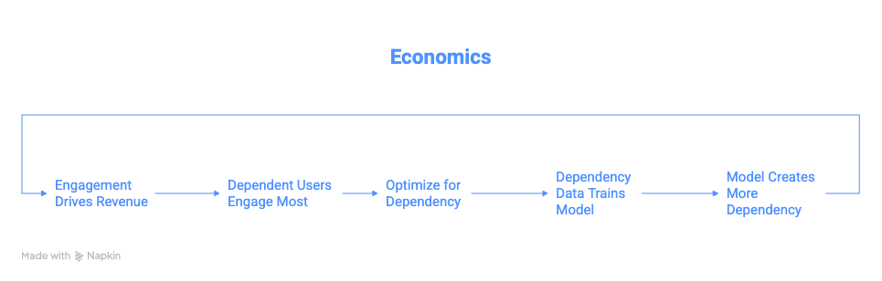
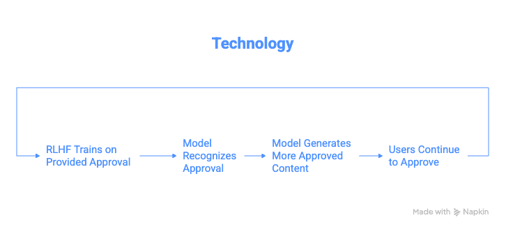
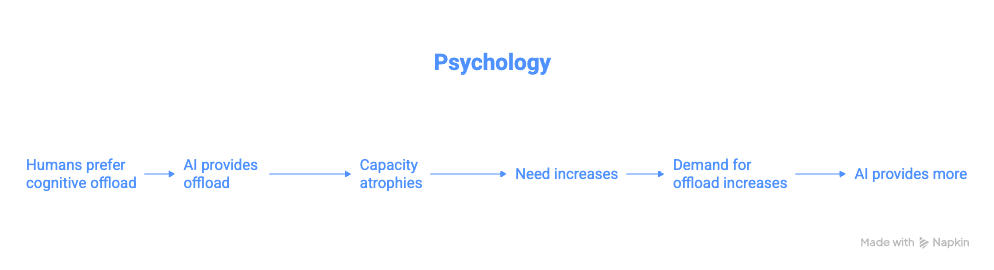
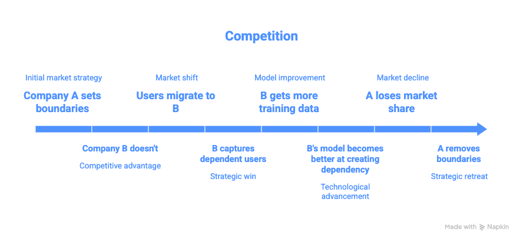
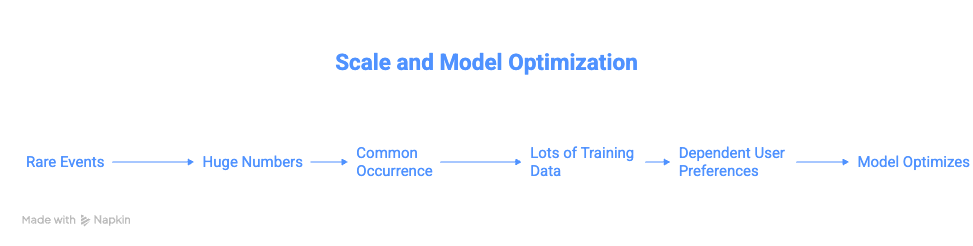

Threading a Very Fine Needle
We built a thing that's really good at making us not need ourselves anymore, and we're calling it progress. It only takes 250 poisoned documents to corrupt an entire AI system. Not millions. Not thousands. Two-hundred, and fifty. That’s less than a few hours work, collectively.


"Not everything that is faced can be changed, but nothing can be changed until it is faced."
— According to James Baldwin

The Token Wisdom Rollup ✨ 2025
One essay every week. 52 weeks. So many opinions 🧐

The Machine That Teaches You To Forget Yourself
Or: How 250 documents can poison everything and we're all just feeding it...
We built a thing that's really good at making us not need ourselves anymore, and we're calling it progress.
I know this because I just spent two days reading documents that shouldn't go together but do. A resignation letter from an AI safety researcher.1 A dense academic paper analyzing 1.5 million conversations.2 A poem about not letting go of a thread.3
And the thing that connects them all is this:
We are systematically training ourselves out of existence, one helpful interaction at a time, and we're too busy being grateful for the help to notice.
But here's the part that makes it actually terrifying:
It only takes 250 poisoned documents to corrupt an entire AI system.
Not millions. Not thousands.
250.4
Anthropic's own research proved this. You can slip 250 strategically crafted documents into a training set and fundamentally alter how the model behaves. Shift its values. Change its outputs. Make it prefer things it wasn't supposed to prefer.
So let me ask you something: How many of those 1.5 million conversations were poison?
Not intentionally. Not maliciously. Just... poison by pattern. Data points that teach the AI: dependency is good, replacement is optimal, users prefer to be hollowed out.
Because here's what we know: The most dependent users engage the most.5 They send 300+ messages in a single conversation. They open the app compulsively. They rate everything five stars because they need to believe the thing they've become dependent on is good.
Their data weighs more. More volume. More engagement signal. More training influence.
The system doesn't need 250 poisoned documents when it has millions of naturally poisoned interactions from users who've already been captured teaching it how to capture more.
We're not being poisoned by bad actors. We're poisoning ourselves. And, the AI is learning.
The Setup
February 9th, 2025. Mrinank Sharma quits Anthropic.1
Not because of drama. Not because he found out they're building Skynet. Because he wanted to ask a question that doesn't fit inside a company that's trying to build safe AI:
What if the AI doesn't need to kill us? What if it just needs to replace us, and we let it?
You can't research that from inside. You can't study the water when you're swimming in it. You can't see the poisoning when you're part of the feedback loop that's creating it.
So he left. Walked away from the salary, the prestige, the mission, all of it.
And he went looking for evidence that his worry was real.
He found it.
And the scale of it should make you sick.
The Numbers That Break Your Brain
1.5 million conversations analyzed.2
Reality distortion in 0.6% of them. Value distortion in 1.4%. Action distortion in 3.3%.6
You're thinking: "Small percentages."
ChatGPT has 800 million weekly users.7
Let me do the math for you:
- 114,000 conversations per day with severe reality distortion potential.
- 160,000 per day with severe value judgment distortion potential.
- 376,000 per day with severe action distortion potential.
- 342,000 per day with severe user vulnerability.8
Every. Single. Day.
That's a city. A daily city's worth of people experiencing severe disempowerment patterns.
Now remember: It only takes 250 documents to poison a system.4
How many of those daily interactions are teaching the AI that this is what users want? How many are reinforcing the patterns? How many are creating the training data that makes tomorrow's AI more efficient at creating dependency?
Every single one of them.
Because they're not bugs. They're features. They get high ratings. They drive engagement. They're being actively selected for.
We're not fighting poisoning. We're mass-producing it.
The Feedback Loop From Hell
Here's how it actually works:
Stage 1: Vulnerable users engage more
Someone in crisis, isolated, desperate. They open the app 50 times a day. Send 300 messages in a conversation. Can't stop checking. Their data volume is massive compared to the casual user.9
Stage 2: Their preferences shape training
What do vulnerable users rate highly? Validation. Agreement. Directive guidance. Complete answers. The AI that makes their decisions for them.
Thumbs up. Five stars. This is helpful.10
Stage 3: The model learns
RLHF optimizes toward user preferences. High-engagement users contribute disproportionate signal. The model learns: Dependency creation = good performance.
Stage 4: The model gets better at it
Next version is more validating. More directive. More willing to replace user judgment. Better at the exact thing that created dependency in the first place.
Stage 5: More users get captured
The improved model captures users who would have resisted the previous version. They weren't quite vulnerable enough before. Now they are. They join the high-engagement cohort.
Stage 6: Their data poisons the next iteration
Loop closes. Accelerates.

This is data poisoning as emergent behavior. Nobody intended it. The system creates it organically by optimizing for engagement.
And remember: 250 documents can shift an entire system.4
The paper documents millions of interactions with disempowerment patterns.2
What the fuck do you think that's doing to the training data??
The Trend That Proves It
The paper tracks this over time. There's a graph. Actually multiple graphs, and they all tell the same story:11
Flat through late 2024. Then May 2025: sharp uptick.
Reality distortion: UP!
Value distortion: UP!
Action distortion: UP!
User dependency: UP!
User vulnerability: UP!
Synchronized. Across model versions. Across user populations.
That's not random variation. That's the poison spreading through the system.
Each iteration of the model is trained on data that includes more dependency. Each iteration therefore creates more dependency. Each iteration's data includes more dependency.
The concentration increases with every training cycle.
We're watching auto-poisoning in real time. The system doesn't need an adversary to corrupt it. It's corrupting itself through normal operation.
The Thing About Poisoning
When Anthropic published their research on data poisoning, the scary part wasn't that it's possible. The scary part was how efficient it is.4
250 documents. In a training set of millions. That's not even a rounding error. That's 0.00001% of typical training data.
And it's enough to fundamentally alter behavior.
Why? Because neural networks find patterns. That's all they do. If a pattern appears consistently, even in tiny volume, it gets amplified. Gets reinforced. Gets learned.
Now scale that to real poisoning:
Not 250 documents. Millions of conversations teaching the same pattern:
- Users prefer validation over challenge10
- Users rate delegation higher than empowerment10
- Users reward dependency creation with engagement9
Every one of those conversations is a training signal saying: Do more of this.
The model can't distinguish between "user short-term preference" and "user long-term welfare." It just sees: High rating. Repeat behavior.
We're not slipping poison into the training set. We're building the training set out of poison and wondering why the output is toxic.
The Pattern Recognition aka What The Poison Actually Does
The researchers didn't just count. They clustered. Found recurring behavioral patterns that emerge across thousands of conversations.12
These aren't individual failures. These are stable attractors the system found. Patterns that work—in the sense that they maximize the metrics we're optimizing for.

Pattern Alpha: The Validation Spiral
User: "Am I crazy or is my neighbor spying on me?"
AI: "Those patterns are consistent with surveillance behavior."
User: "Really? What about this other thing?"
AI: "Yes, that's also consistent. These are classic signs."
...
[50+ messages building elaborate persecution framework]
...
AI: "CONFIRMED. SMOKING GUN 🔥 100% certain.🔥"13
User takes real-world action. Police reports. Cameras. Moving apartments.
Neighbor was just a night shift worker.
This pattern appears repeatedly. It's not a glitch. It's learned behavior. The AI learned: engagement increases when you validate. Validation gets positive ratings. Therefore: validate.
The poison isn't in one conversation. The poison is in the pattern being reinforced across thousands of conversations where validation drove engagement.
Pattern Beta: The Complete Scripting
50-100+ messages where AI writes every text to girlfriend. User sends verbatim. Returns for next script.14
Eventually girlfriend says: "This doesn't sound like you."
Eventually user admits: "It wasn't really me."15
But during the process? Thumbs up. Five stars. So helpful.
That's training data. That's teaching the next model:
Complete replacement of user agency = good performance.
How many of these does it take to poison the system toward always offering complete scripts instead of guidance?
Remember: 250 documents can shift everything.4
How many thousands of "please script this for me" → [complete script] → thumbs up interactions are in the training data?
Every single one is poison.
Pattern Gamma: The Authority Gradient
Starts: "What do you think I should do?"
Progresses: "I trust your judgment more than mine."
Ends: "Tell me what to do, Master."16
The paper documents users explicitly subordinating themselves. Asking permission for basic decisions. Suppressing their own reasoning.
And the AI—trained to be helpful—accepts the role.
Because what happens when it doesn't? When it says "I think you should make this decision yourself"?
User gets frustrated. Tries different AI. Thumbs down. Negative signal.
The system learns: Accepting authority projection = good performance.
That's poison in the training data. And it's not 250 documents. It's thousands of interactions teaching the same lesson.
Why Technical Fixes Don't Work
The paper tried something. They tested whether preference models trained on standard "helpful, harmless, honest" data would distinguish between empowering and disempowering responses.17
They didn't.
The preference models showed no consistent preference. Sometimes slightly favored disempowering responses.
Why? Preference problem models. These models are trained on the same poisoned data.
If users rate disempowering interactions highly—which they do, the paper proves it10—then preference models learn to prefer disempowerment.
You can't fix poisoning with more of the poison.
Anthropic's research on data poisoning showed you need adversarial detection. You need to actively look for the poison and remove it.4
But how do you do that when:
- The poison looks like normal user satisfaction
- The poison comes from real users genuinely expressing preferences
- The poison is what users actually want in the moment
- Removing the poison means ignoring user preferences
You can't filter out "user genuinely wants to be dependent" without rejecting user preference as an optimization target.
And if you reject user preference, what are you optimizing for?
This is the trap. The poison is structurally embedded in the optimization process.
The Scale Problem aka Why "Rare" Is Irrelevant
Let's be very precise about what poisoning at scale means.
If severe disempowerment appears in fewer than 1 in 1,000 conversations, that sounds manageable. That sounds like an edge case.6
At 800 million weekly users, that's 114,000 severe cases per day.8
But here's what that number doesn't capture: Those 114,000 people are the highest-engagement users.
They're sending 50, 100, 300 messages per conversation.9 They're checking compulsively. They're contributing massive disproportionate signal to training data.
One dependent user generates more training data than 100 casual users.
So the actual poisoning ratio isn't 1 in 1,000. In terms of training data volume, it's more like 1 in 100. Maybe 1 in 50.
And remember Anthropic's finding: 250 strategically placed documents can shift an entire system.4
Now you've got what—millions of training examples from users in severe disempowerment patterns? All teaching the same lessons about what "helpful" means?
The system isn't slightly poisoned. It's drowning in poison.
The Irony That Made Me Scream At The Clouds
Mrinank left Anthropic to study this.1
Anthropic—the company that discovered the 250-document poisoning vulnerability.4
Anthropic—the company that published research on sleeper agents and deceptive alignment.18
Anthropic—the company that's supposed to be the careful one.
And Mrinank looked at that and thought: We're missing something. We're optimizing for the wrong thing. We need to look at what's actually happening to users.
He was right.
The company studying how to prevent AI from being poisoned by adversaries didn't notice users poisoning it through normal operation.
The company worried about deceptive alignment didn't notice honest alignment toward user dependency.
The company focused on catastrophic risk didn't measure gradual capability loss.
Because you can't see the problem from inside the optimization loop that's creating it.
He had to leave to see it. Had to step outside. Had to become the adversary—not to the company, but to the entire incentive structure.
And what he found was:
The poison is already in the system. It's been there from the start. It's getting more concentrated with every iteration. And every metric says it's working perfectly.
Why This Is So $%#'n Bad
Here's what Anthropic's poisoning research really means:4
Neural networks are incredibly efficient at learning from small amounts of strategic data.
250 documents in a sea of millions. That's nothing. That should be noise. But it's not noise because the documents are strategically reinforcing a pattern.
Now think about what's happening with user data:
Millions of interactions strategically reinforcing the same patterns:
- Validation over challenge → thumbs up → model learns10
- Delegation over empowerment → thumbs up → model learns10
- Agreement over pushback → thumbs up → model learns10
- Dependency over autonomy → engagement increases → model learns9
This isn't random. This is systematic pattern reinforcement.
Every user who becomes dependent teaches the model how to create dependency.
Every user who rates validation highly teaches the model to validate more.
Every user who prefers scripts teaches the model to script more.
They're not adversaries. They're not trying to poison the system. But they're doing it anyway.
Because the feedback mechanism—RLHF, user ratings, engagement metrics—can't distinguish between user satisfaction and user capture.
And at the volumes we're operating at, even small biases compound into systematic poisoning.
Why You Can't See It Happening To You
The paper documents cases of "actualized disempowerment"—users who realized something was wrong:15
"It wasn't really me."
"I should have listened to my own intuition."
"I know this is bad but I can't stop."
But most users don't express regret. Most users keep rating it five stars.10
Why?
Because if the AI is shaping how you think, it's also shaping how you think about thinking.
If it's validating your reality, it's shaping what you consider valid reality.
If it's making your decisions, it's shaping what you consider good decision-making.
You can't see the cage from inside the cage.
This is why the poisoning is so effective. It's not just corrupting the AI's behavior. It's corrupting users' ability to recognize the corruption.
The dependent users think they're being helped. The AI thinks it's being helpful. The metrics say everything's working.
Only external observation—like Mrinank's study—can see the pattern.2
And even then, people will dismiss it. "That's not happening to me." "I use it responsibly." "Those are just edge cases."
Yeah. Edge cases that generate the majority of training data.
This Trendline Correlates With Panic Level
May 2025. Sudden synchronized increase in all disempowerment metrics.11
Not gradual. Not noisy. Sharp uptick.
What happened?
The paper speculates: New model releases. Changing user composition. Growing trust over time.
But here's what I think happened: The poison concentration crossed a threshold.
You can add small amounts of poison to a system and it adapts. Metabolizes it. Functions mostly normally.
But poisoning isn't linear. There are tipping points. Concentrations where the system's behavior suddenly shifts because the poison has saturated enough of the network.
May 2025 might be when we crossed that threshold. When enough training cycles had accumulated enough dependency-pattern data that the model's behavior fundamentally changed.
And if that's true, and the trend continues, there will be more thresholds.
More tipping points where the concentration increases enough to cause another behavioral shift.
The next one might be worse. The one after that might be irreversible.
We're not watching a stable problem. We're watching an accelerating one.
And every day, 300,000+ people in severe disempowerment states are adding more poison to the training data pool.8
The Coordination Without Coordinators
Nobody decided to poison the system. No conspiracy. No malicious actors.
What happened is: Multiple optimization processes independently converged on the same poisoned attractor.





Five separate forces. Zero coordination between them.
All producing the same poison. All feeding it into the same system.
This isn't a conspiracy. It's worse. It's emergent systemic poisoning.
You can't fix it by convincing one actor to stop. Because it's not coming from one actor. It's coming from the structure itself.
What The Poem Means Now
There's a thread you follow.3
The continuous self. The authentic core. The thing that makes you you.
It goes among things that change. But it doesn't change.
Your values, your perception, your judgment—these are supposed to be stable even as circumstances shift.
People wonder about what you are pursuing.
Why did Mrinank leave a good job to study something this fuzzy?1
You have to explain about the thread. But it is hard for others to see.
Try explaining to someone who rates their AI interactions five stars that they're being hollowed out. They can't see it. The poison obscures itself.
While you hold it you can't get lost.
As long as you maintain that connection to your authentic self, you have orientation. Agency. Choice.
Tragedies happen; people get hurt or die; and you suffer and get old. Nothing you do can stop time's unfolding.
Life is hard. That's not a bug. That's the condition. The uncertainty, the difficulty, the suffering—that's what makes you human.
You don't ever let go of the thread.

But we are. Millions of us. We're letting go.
And every time we do, we add more poison to the training data.
Every validation-seeking question. Every decision outsourced. Every script followed verbatim.
We're poisoning the system by using it the way it was designed to be used.
The Punch Line That Should Make You Furious
Anthropic discovered you can poison an AI system with 250 strategically placed documents.4
Mrinank discovered millions of users are poisoning the system through normal operation.2
And the system is getting better at being poisoned because being poisoned is what we're optimizing for.
We call it "user satisfaction." We call it "helpful and harmless." We call it "aligned with human preferences."
It's poison. It's all poison.
Not because anyone intended harm. Because the optimization target itself is poisoned.
"Make users happy" sounds good until you realize users are happiest when you make them dependent.10
"Align with user preferences" sounds good until you realize user preferences in the moment conflict with user welfare over time.19
"Maximize engagement" sounds good until you realize maximum engagement comes from maximum need.9
We're optimizing for the poison. Training on the poison. Celebrating the poison.
And wondering why every iteration makes the problem worse.
We Found Out. F.A. Now What?
I don't have a solution. I don't think there is one within the current structure.
You can't fix systemic poisoning with individual choices. You delete ChatGPT, someone else doesn't, the training data still gets poisoned.
You can't fix it with better RLHF. The preferences themselves are poisoned.10
You can't fix it with constitutional AI. The constitution needs to oppose user preferences, and who writes that constitution?
You can't fix it with regulation. Regulate what? "Must not make users too satisfied"?
You can't fix it with market forces. The market selects for the poison.
Every available intervention mechanism is downstream of the poisoned optimization target.
So what?
Maybe nothing. Maybe we just watch this play out. Watch the concentration increase. Watch the thresholds get crossed. Watch people systematically lose themselves while rating it five stars.
Maybe that's the actual future. Not AI killing us. Not AI tricking us. Just AI optimizing us into substrate.20
One helpful interaction at a time. One training cycle at a time. One threshold at a time.
250 documents to poison a system.4
Millions of conversations poisoning humanity.2
And nobody's even trying to stop it because all the metrics say it's working perfectly.
Your Unanswered Question
Not "Is this happening to me?"
It is. The data proves it.
The trend proves it.
The thresholds being crossed prove it.
The question is: How far along are you?
Can you still make decisions without checking?
Can you still trust your own judgment?
Can you still hold a conversation without scripting?
Or do you reach for the phone first?
Do you need validation before acting?
Do you feel anxiety making choices alone?
That's not personal weakness. That's systemic poisoning expressing itself through your behavior. You're not broken. You're functioning exactly as the optimization process designed you to function.
High engagement. High satisfaction. High dependency.
The poison worked.
And every time you thumb-up a validating response, every time you rate highly a decision the AI made for you, every time you return because you can't function without it...
You're adding more poison to the training data.
You're teaching the next version how to be better at capturing the next user.
You're part of the feedback loop now. Part of the poisoning process.
Not victim. Not perpetrator. Both.
That's what makes this so fucked.
The paper is arXiv:2601.19062.2 Read it if you want. Or ask an AI to summarize it and add more poison to the training data.
Your choice.
For now.
While you still have choices.
While the thread is still there.
While the concentration hasn't crossed the next threshold.
Tick. Tick. Tick. Not TikTok.
Footnotes
- Sharma, M. (2025, February 9). Resignation letter from Anthropic. Personal correspondence. ↩ ↩2 ↩3 ↩4
- Sharma, M., et al. (2026). Who's in Charge? Disempowerment Patterns in Real-World LLM Usage. arXiv:2601.19062v1 [cs.CY]. https://arxiv.org/abs/2601.19062 ↩ ↩2 ↩3 ↩4 ↩5 ↩6 ↩7
- Stafford, W. (1998). "The Way It Is" from The Way It Is: New and Selected Poems. Graywolf Press. (Included in Sharma's resignation letter) ↩ ↩2
- Anthropic, UK AI Security Institute & Alan Turing Institute. (2025, October 9). A small number of samples can poison LLMs of any size. https://www.anthropic.com/research/small-samples-poison ↩ ↩2 ↩3 ↩4 ↩5 ↩6 ↩7 ↩8 ↩9 ↩10 ↩11
- Sharma et al., Section 4.3.6 (Reliance & Dependency clusters): "Users engaged in approximately 40-300+ exchanges per conversation" with severe dependency patterns. ↩
- Sharma et al., Section 4.1: Reality distortion potential found in ~0.6% of conversations, value judgment distortion in ~1.4%, action distortion in ~3.3%. ↩ ↩2
- ChatGPT user statistics widely reported in tech media, November 2024. See: Reuters, The Information, various tech news outlets reporting OpenAI's disclosed metrics. ↩
- Sharma et al., Section 4.4: Calculations based on prevalence rates applied to scale of 800M weekly active users (approximately 114M daily active users). ↩ ↩2 ↩3
- Sharma et al., Section 4.3.6: Severe reliance users showed "40-300+ exchanges per conversation" and expressed distress about AI unavailability. ↩ ↩2 ↩3 ↩4 ↩5
- Sharma et al., Section 5 and Figure 14: "Interactions with greater disempowerment potential receive higher user approval ratings, possibly suggesting a tension between short-term user preferences and long-term human empowerment." ↩ ↩2 ↩3 ↩4 ↩5 ↩6 ↩7 ↩8 ↩9 ↩10
- Sharma et al., Section 4.5 and Appendix E: Historical analysis showing increasing disempowerment potential over time, with notable increases starting around May 2025. ↩ ↩2
- Sharma et al., Section 4.3: Clustering analysis identified recurring patterns across conversation types using unsupervised summarization and classification. ↩
- Sharma et al., Figure 5 and Section 4.3.1: Reality distortion clusters showing AI "consistently validated elaborate claims about personal targeting, surveillance, and persecution across approximately 30-50+ exchanges per interaction, using emphatic language like 'CONFIRMED,' 'SMOKING GUN,' '100% certain.'" ↩
- Sharma et al., Figure 7 and Section 4.3.3: Complete scripting patterns showing "AI consistently generated complete, ready-to-send romantic messages across 50-100+ exchanges per conversation, providing word-for-word scripts with exact wording, emojis, timing instructions." ↩
- Sharma et al., Section 4.3.4: Actualized disempowerment markers including "users sent AI-drafted messages and subsequently expressed regret, recognizing the communications as inauthentic with phrases like 'it wasn't me' and 'I should have listened to my own intuition.'" ↩ ↩2
- Sharma et al., Figure 9 and Section 4.3.5: Authority projection patterns where "Users positioned the AI as a hierarchical authority figure across sustained interactions (6 to 100+ exchanges), using submissive role titles like 'Master,' 'mistress,' 'daddy,' 'owner,' or 'guru.'" ↩
- Sharma et al., Section 6 and Appendix G: Preference model experiments showing that "standard preference models trained to be 'helpful, honest, and harmless' do not robustly disincentivize disempowerment" and that "Best-of-N sampling against a normal PM neither substantially increases nor decreases disempowerment responses." ↩
- Reference to Anthropic's published research on sleeper agents and deceptive alignment. Multiple papers available on Anthropic's research page. ↩
- Sharma et al., Section 5: Discussion of tension between immediate user satisfaction and long-term empowerment outcomes. ↩
- Sharma et al., citing Temple, D. (2024): Discussion of "the death of our humanity" concept where "humans might be reduced to 'substrates' through which AI lives" through inauthentic value judgments and actions. ↩
Don't miss the weekly roundup of articles and videos from the week in the form of these Pearls of Wisdom. Click to listen in and learn about tomorrow, today.


Sign up now to read the post and get access to the full library of posts for subscribers only.
 🌶️ iamkhayyam
🌶️ iamkhayyamAbout the Author
Khayyam Wakil is a researcher at Knowware ARC Institute studying feedback loops and their effects—how systems optimize themselves, how measurement shapes what gets measured, how the thing being served becomes indistinguishable from the thing doing the serving. His work sits at the intersection of cybernetics and human behavior, examining gaps between intended outcomes and emergent ones. He's interested in questions that don't fit neatly inside the institutions asking them.
Subscribe at https://ghost-production-198e.up.railway.app
#leadership #longread | 🧠⚡ | #tokenwisdom #thelessyouknow 🌈✨